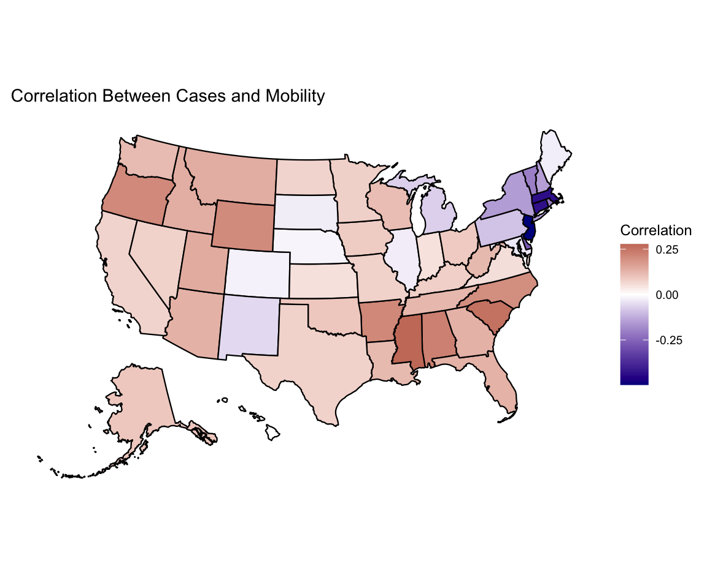

library(HDSinRdata)
library(tidyverse)
library(patchwork)
library(gt)
library(gtsummary)
library(usmap)9 Case Study: Exploratory Data Analysis
In this chapter, we demonstrate a short exploratory analysis as a case study. This case study focuses on COVID-19 cases and deaths during 2020 using the covidcases and mobility datasets from the HDSinRdata package. A new package that is used in this case study is usmap package (Di Lorenzo 2024), which allows us to easily create spatial plots of the United States.
9.1 Preprocessing
We start by cleaning and merging our data. The covidcases data contains weekly confirmed COVID-19 cases and deaths at the state and county level in 2020. As the data description notes, some of these values may be negative due to data discrepancies in the cumulative counts data. The mobility data contains daily mobility statistics by state.
# Read in data
data(covidcases)
data(mobility)First, we look at the columns in our data. We convert the date columns in the mobility data to be recognized as a date using the as.Date() function. The covidcases data has the week number of 2020. We create a similar column for the mobility data.
# Convert to date format and find week
mobility$date <- as.Date(mobility$date, formula = "%Y-%M-%D")
mobility$week <- week(mobility$date)This allows us to summarize the mobility for a state across each week.
# Find average mobility for week
mobility_week <- mobility %>%
group_by(state, week) %>%
summarize(m50 = mean(m50, na.rm=TRUE), .groups = "drop")
head(mobility_week)
#> # A tibble: 6 × 3
#> state week m50
#> <chr> <dbl> <dbl>
#> 1 Alabama 9 13.2
#> 2 Alabama 10 14.6
#> 3 Alabama 11 13.4
#> 4 Alabama 12 8.98
#> 5 Alabama 13 7.81
#> 6 Alabama 14 6.73For both of our datasets, we want to check whether each state was observed across all dates and how the state’s name is represented. For the mobility data, our data is at the state level so we can use the table() function.
# Find number of dates recorded for each state
table(mobility_week$state)
#>
#> Alabama Alaska Arizona Arkansas
#> 27 27 27 27
#> California Colorado Connecticut Delaware
#> 27 27 27 27
#> Florida Georgia Hawaii Idaho
#> 27 27 27 27
#> Illinois Indiana Iowa Kansas
#> 27 27 27 27
#> Kentucky Louisiana Maine Maryland
#> 27 27 27 27
#> Massachusetts Michigan Minnesota Mississippi
#> 27 27 27 27
#> Missouri Montana Nebraska Nevada
#> 27 27 27 27
#> New Hampshire New Jersey New Mexico New York
#> 27 27 27 27
#> North Carolina North Dakota Ohio Oklahoma
#> 27 27 27 27
#> Oregon Pennsylvania Rhode Island South Carolina
#> 27 27 27 27
#> South Dakota Tennessee Texas Utah
#> 27 27 27 27
#> Vermont Virginia Washington Washington, D.C.
#> 27 27 27 27
#> West Virginia Wisconsin Wyoming
#> 27 27 27For the covidcases data, our data is at the county level. We need to summarize the data instead. In this case, some states were observed for fewer weeks than others.
# Find state names and number of weeks recorded for each state
unique(covidcases$state)
#> [1] "Alabama" "Alaska"
#> [3] "Arizona" "Arkansas"
#> [5] "California" "Colorado"
#> [7] "Connecticut" "Delaware"
#> [9] "District of Columbia" "Florida"
#> [11] "Georgia" "Hawaii"
#> [13] "Idaho" "Illinois"
#> [15] "Indiana" "Iowa"
#> [17] "Kansas" "Kentucky"
#> [19] "Louisiana" "Maine"
#> [21] "Maryland" "Massachusetts"
#> [23] "Michigan" "Minnesota"
#> [25] "Mississippi" "Missouri"
#> [27] "Montana" "Nebraska"
#> [29] "Nevada" "New Hampshire"
#> [31] "New Jersey" "New Mexico"
#> [33] "New York" "North Carolina"
#> [35] "North Dakota" "Ohio"
#> [37] "Oklahoma" "Oregon"
#> [39] "Pennsylvania" "Rhode Island"
#> [41] "South Carolina" "South Dakota"
#> [43] "Tennessee" "Texas"
#> [45] "Utah" "Vermont"
#> [47] "Virginia" "Washington"
#> [49] "West Virginia" "Wisconsin"
#> [51] "Wyoming"
num_wks <- covidcases %>%
group_by(state) %>%
summarize(num_weeks = n_distinct(week), .groups = "drop")
summary(num_wks)
#> state num_weeks
#> Length:51 Min. :23.0
#> Class :character 1st Qu.:25.5
#> Mode :character Median :26.0
#> Mean :26.0
#> 3rd Qu.:27.0
#> Max. :27.0Note that D.C. is written differently for each data source. We update this name in the mobility data.
mobility_week$state[mobility_week$state == "Washington, D.C."] <-
"District of Columbia"After checking the formatting of the state and week columns, we can now merge our data together. In this case, we want to add the mobility data to the case data and use a left_join().
# Join cases and mobility data
covid <- left_join(covidcases, mobility_week, by = c("state", "week"))Next, we want to get some simple information about the continuous variables in our data. We observe two key points. First, we can see the negative values the data description warned us about, and second, there is no missing data.
summary(covid[, c("weekly_cases", "weekly_deaths", "m50")])
#> weekly_cases weekly_deaths m50
#> Min. : -190 Min. :-511 Min. : 0.0
#> 1st Qu.: 3 1st Qu.: 0 1st Qu.: 5.0
#> Median : 10 Median : 1 Median : 7.7
#> Mean : 80 Mean : 5 Mean : 7.7
#> 3rd Qu.: 36 3rd Qu.: 3 3rd Qu.: 9.9
#> Max. :30584 Max. :4416 Max. :49.4These negative numbers are clear data discrepancies. When showing the distribution of cases in our exploratory analysis we may choose to either code these as 0 or NA. We decide to recode these negative values as NA.
# Set negative counts to NA
covid$weekly_cases <- replace(covid$weekly_cases,
which(covid$weekly_cases < 0),
NA)
covid$weekly_deaths <- replace(covid$weekly_deaths,
which(covid$weekly_deaths < 0),
NA)As the last step in our pre-processing, we add in the state abbreviation and region for each state using the state.name and state.region vectors available in R. We code D.C. to be in the same region as Maryland and Virginia.
# Add region and abbreviation and remove county
region_key <- data.frame(state = c(state.name,
"District of Columbia"),
state_abb = c(state.abb, "DC"),
region = c(as.character(state.region),
"South"))
covid <- covid %>%
left_join(region_key, by = c("state"))
head(covid)
#> # A tibble: 6 × 8
#> state county week weekly_cases weekly_deaths m50 state_abb region
#> <chr> <chr> <dbl> <int> <int> <dbl> <chr> <chr>
#> 1 Alabama Autau… 12 3 0 8.98 AL South
#> 2 Alabama Autau… 13 3 0 7.81 AL South
#> 3 Alabama Autau… 14 2 1 6.73 AL South
#> 4 Alabama Autau… 15 11 1 6.50 AL South
#> 5 Alabama Autau… 16 5 1 7.53 AL South
#> 6 Alabama Autau… 17 8 2 8.29 AL South9.2 Mobility and Cases Over Time
Now that our data are merged and cleaned, we start exploring mobility and cases by region. The following summary table shows that these measures did differ by region overall.
covid %>%
select(c("region", "m50", "weekly_cases", "weekly_deaths")) %>%
tbl_summary(by = "region", missing = "no") %>%
as_gt()| Characteristic | North Central, N = 22,6531 | Northeast, N = 5,1651 | South, N = 32,2761 | West, N = 9,4361 |
|---|---|---|---|---|
| m50 | 7.4 (5.4, 8.8) | 4.2 (1.6, 5.2) | 9.7 (7.1, 11.3) | 4.3 (2.9, 7.0) |
| weekly_cases | 6 (2, 22) | 17 (4, 91) | 13 (4, 44) | 8 (2, 38) |
| weekly_deaths | 1 (0, 2) | 2 (1, 10) | 1 (0, 3) | 0 (0, 2) |
| 1 Median (IQR) | ||||
We then plot mobility over time both for the whole country and by region. Across the country we see a similar pattern in how mobility fluctuated but that certain regions had overall higher mobility than others.
# Average mobility in the US over time - overall
pmob1 <- covid %>%
select(c(region, state, week, m50)) %>%
distinct() %>%
group_by(week) %>%
summarize(avg_m50 = mean(m50, na.rm=TRUE), .groups="drop") %>%
ggplot() +
geom_line(aes(x = week, y = avg_m50)) +
labs(x = "Week in 2020", y = "Average Mobility",
title = "Average Mobility in the US") +
theme_bw()
# Average mobility in the US over time - by region
pmob2 <- covid %>%
select(c(region, state, week, m50)) %>%
distinct() %>%
group_by(region, week) %>%
summarize(avg_m50 = mean(m50, na.rm=TRUE), .groups="drop") %>%
ggplot() +
geom_line(aes(x = week, y = avg_m50, color = region)) +
labs(x = "Week in 2020", y = "Average Mobility",
title = "Average Mobility by Region in the US",
color = "Region") +
theme_bw() +
theme(legend.position = "bottom")
pmob1+pmob2We then look at cases and deaths by region. A limitation of these data are that we do not have population counts which would allow us to standardize these numbers. However, we do use a secondary y-axis using the sec_axis() function within scale_y_continuous() to allow us to plot deaths and cases together. In this case, the secondary axis is scaled by 1/10th of the primary axis.
# Change in number cases over time, per region
covid %>%
filter(!is.na(region)) %>%
group_by(region, week) %>%
summarize(weekly_cases = sum(weekly_cases, na.rm = TRUE),
weekly_deaths = sum(weekly_deaths, na.rm = TRUE),
.groups = "drop") %>%
ggplot() +
geom_line(aes(x = week, y = weekly_cases, color = region,
linetype = "Cases")) +
geom_line(aes(x = week, y = weekly_deaths*10, color = region,
linetype = "Deaths")) +
scale_y_continuous(name = "Average Weekly Cases",
sec.axis = sec_axis(~./10,
name = "Average Weekly Deaths"))+
scale_linetype(name = "Measure") +
labs(x = "Week in 2020", color = "Region",
title = "Weekly Cases Over Time by Region") +
theme_bw()To look at how mobility and cases are related, we look at a scatter plot of mobility and cases in California.
covid_ca <- covid %>% filter(state == "California")
ggplot(covid_ca)+
geom_point(aes(x = weekly_cases, y = m50), na.rm = TRUE) +
labs(x = "Weekly Cases", y = "Average Mobility")This motivates us to look at the correlation between these two columns by state. We plot this using the plot_usmap() function from the usmap package. Interestingly, we observe different relationships throughout the country, but none of the correlations are particularly strong.
# Calculate and plot correlation between cases and mobility, y state
covid_cor <- covid %>%
group_by(state) %>%
summarize(correlation = cor(weekly_cases, m50,
use = "complete.obs"))
plot_usmap(regions = "states", data = covid_cor,
values = "correlation") +
scale_fill_gradient2(low = "darkblue", high = "darkred",
mid="white", name = "Correlation") +
labs(title = "Correlation Between Cases and Mobility") +
theme(legend.position = "right")
Last, we look at how the total cases and deaths are related to each other. This shows that the Northeast suffered more deaths per case overall, which may be related to the lower mobility and negative correlation between mobility and cases observed earlier.
# Relationship between cases and deaths summarized
covid %>%
group_by(region, state_abb) %>%
summarize(total_cases = sum(weekly_cases, na.rm = TRUE),
total_deaths = sum(weekly_deaths, na.rm = TRUE),
.groups = "drop") %>%
ggplot() +
geom_label(aes(x = total_cases, y = total_deaths, color = region,
label = state_abb), size = 1.5) +
labs(x = "Total Cases", y = "Total Deaths", color = "Region") +
theme_bw()